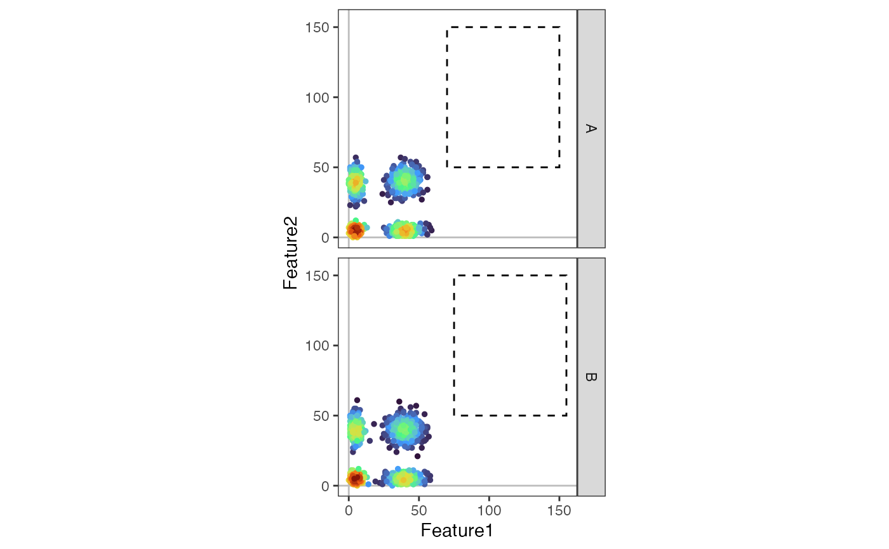

Create a pseudocolor plot.
PseudocolorPlot.RdCreate a pseudocolor plot of two markers.
Usage
PseudocolorPlot(
object,
marker1,
marker2,
facet_vars = NULL,
plot_gate = NULL,
scale_density = TRUE,
margin_density = FALSE,
coord_fixed = T,
pt_size = 1,
alpha = 1,
layer = NULL,
grid_n = 500,
colors = NULL,
...
)Arguments
- object
A Seurat object.
- marker1
Marker to plot along the x-axis.
- marker2
Marker to plot along the y-axis.
- facet_vars
Variables to facet the plot by.
- plot_gate
A data.frame with columns 'xmin', 'xmax', 'ymin', 'ymax' to plot a gate. This data.frame can also contain the variables in 'facet_vars' to plot different gates by facets.
- scale_density
Scale the density to the maximum density per facet.
- margin_density
Add marginal density plots. Only supported when 'facet_vars' is NULL.
- coord_fixed
Fix the aspect ratio of the plot. Only supported when 'margin_density' is FALSE.
- pt_size
Size of the points.
- alpha
Transparency of the points.
- layer
Name of layer to plot.
- grid_n
Number of grid points to calculate the density.
- colors
Colors to use for the density plot. If NULL, the 'viridis' "turbo" palette is used.
- ...
Additional arguments to pass to 'MASS::kde2d'.
Examples
library(pixelatorR)
library(Seurat)
# A mock-up Seurat Object
object <-
CreateSeuratObject(counts = matrix(c(rpois(100000, 40),
rpois(100000, 5))[sample(1:200000, 200000)],
nrow = 100, ncol = 2000,
dimnames = list(paste0("Feature", 1:100),
paste0("Cell", 1:2000))))
object <-
AddMetaData(object,
metadata = data.frame(sample = rep(c("A", "B"), each = 1000),
sample_type = rep(c("Unstimulated", "Stimulated"),
each = 500, times = 2),
row.names = paste0("Cell", 1:2000)))
plot_gate <-
data.frame(xmin = c(70, 75),
xmax = c(150, 155),
ymin = c(50, 50),
ymax = c(150, 150),
sample = c("A", "B"))
PseudocolorPlot(object,
marker1 = "Feature1",
marker2 = "Feature2",
facet_vars = "sample",
plot_gate = plot_gate,
layer = "counts")
